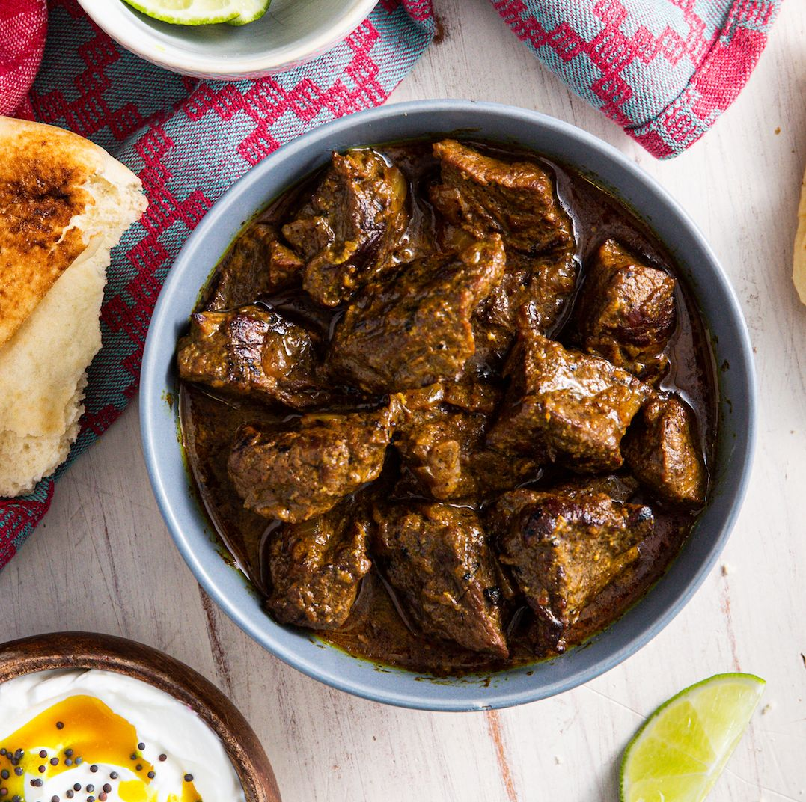

Goru Jhal Vuna

Description:
Jalfrazie is a sautéd dish, which can be prepared with meat, poultry, sea food etc. The word “Jalfrazie” came from 2 words: “Jal” meaning “spicy or pungent” and “Frazie” meaning “Fried”. As in the case of almost all of our cuisine, which started out as insipid concoctions, in the days of the British Raj, the original “Jal Frezie” was bland and tasteless. The Colonial servants would fry up the leftover Christmas Turkey and Chicken Roasts with some pepper, chillies, etc., for Breakfast the next day. Over the years many more ingredients and spices were added to this dish to make it as spicy and delicious as it is today and it has become synonymous with the cuisine of West Bengal.
Ingredients:
- 1 kg tender Beef or Lamb cut into small pieces
- 3 large onions sliced/li>
- 1 large capsicum / bell pepper cut into small pieces
- 1 teaspoon chillie powde
- 1 teaspoon pepper powder
- 1 teaspoon ginger garlic paste
- ½ teaspoon turmeric powder
- 4 Dry red Chillies broken into bits
- 2 teaspoons ghee or butter
- 3 tablespoons oil
- Salt
- Salt
Steps:
- Boil the meat with turmeric powder and a little salt in sufficient water till tender. Drain and keep aside.
- Heat oil in a pan and fry the onions and capsicum for about 3 minutes.
- Add the cooked meat, potatoes and all the ingredients and mix well. Simmer till the gravy dries up. Stir fry till the oil leaves the sides of the pan.
- Heat the ghee in another pan and fry the dry red chillies for a minute or so.
- Turn off the heat and pour over the Beef.
- Serve as a side dish with rice and pepper water or with bread or rotis / chappatis.